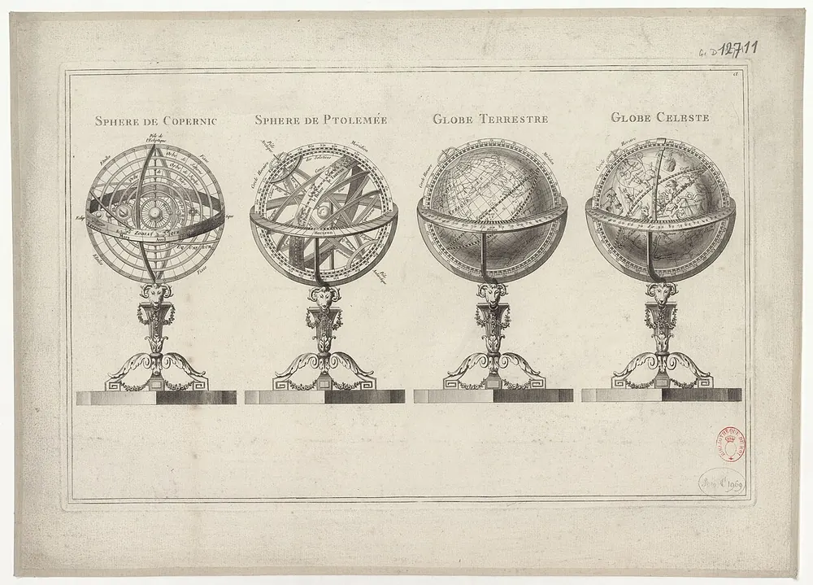

People who say the Earth is larger than we are told usually mean one of three things. They may mean the planet is physically growing — the expanding Earth. They may mean the map is deliberately truncated, with whole continents hidden past the ice. Or they may mean we are on the inside of a sphere, looking at a concave shell — the “cell Earth”.
All three appear below, in the order they were proposed, with the people who proposed them named.
1. The Expanding Earth (the real scientific heresy)
This is the only one of the three that was ever a serious scientific hypothesis, argued in journals by professional geologists for most of the twentieth century. Its founding observation is the one everybody now accepts: Africa and South America fit together like torn paper.
- 1888
Nikolai Yarkovsky publishes a book linking expansion to gravity and chemistry — one of the earliest mechanical attempts.
- 1912
Alfred Wegener proposes continental drift. The fit of the continents is now on the table, and nobody has a mechanism.
- 1927–1940
A German-language wave: Lindemann (1927), Bogolepow (1930), Hilgenberg (1933), Keindl (1940). Hilgenberg is generally credited with the first globe-assembly of the continents on a sphere roughly two-thirds the modern diameter.
- 1956–1969
The English-language second wave: Egyed, Carey, Heezen, Barnett, Brösske, Neyman, Creer, Dearnley, Jordan, Steiner, Meservey. Australian geologist S. Warren Carey becomes its most prominent voice.
- 2007–present
James Maxlow’s quantitative expansion model, and Giancarlo Scalera’s work at the Italian national institute of geophysics, keep a slow-expansion version alive.
What they actually argue
The core claim is simple: new ocean crust is created at the mid-ocean ridges (nobody disputes this), but it is not destroyed at the trenches in equal measure, so the planet’s volume must increase. In Carey’s version, subduction is largely a myth. In the softer “slow expansion” version, some subduction is allowed but not enough to balance the ridges.
Their strongest point is a real one: the ocean floor is geologically young everywhere. None of it predates the Mesozoic. In a constant-size Earth you must destroy all of it; in an expanding Earth you can simply have made it.
“A profound consequence of seafloor spreading is that new crust was, and is now, being continually created along the oceanic ridges. This idea found great favor with some scientists who claimed that the shifting of the continents can be simply explained by a large increase in size of the Earth since its formation. However, this so-called ‘expanding Earth’ hypothesis was unsatisfactory because its supporters could offer no convincing geologic mechanism to produce such a huge, sudden expansion.” USGS, This Dynamic Earth
The two versions, and the numbers
A 2016 comment in the journal History of Geo- and Space Sciences splits the school in two: slow expansion at roughly 0.5 mm per year of radius increase since formation, and fast expansion at roughly 5 mm per year since the Triassic. The same paper argues that space geodesy, gravimetry and seismology leave room for 0.1–0.4 mm/yr today — and calls the theory’s obituary premature.
That is the strongest surviving version of the case, and it is worth stating plainly: it is a fraction of a millimetre per year, and it is contested.
Plate tectonics won because it supplied a mechanism that works: Harry Hess and Robert Dietz’s seafloor spreading, with ocean crust descending at trenches. The key question USGS poses — how can crust be added at ridges without the planet growing? — is answered by subduction, and subduction is now imaged directly by mantle tomography.
On the measurement side, a NASA-led team publishing in Geophysical Research Letters in 2011 used space-geodetic data and found an average radius change of 0.004 inches (0.1 mm) per year — “statistically insignificant”. The Pacific Northwest Seismic Network summarised it as a change of less than a millimetre every five years, consistent with no change at all.
And the historiography has turned: a 2014 paper in the same journal as the 2016 defence is titled, flatly, “The Earth expansion theory and its transition from scientific hypothesis to pseudoscientific belief”, arguing that expansionists survived plate tectonics by rejecting contrary evidence and waiting for a physics revolution that never came.
2. The Earth is far bigger than admitted
This is the version with no paper trail. It typically arrives as a video: the known continents are said to occupy only a fraction of a much larger plane, with the rest hidden behind an Antarctic ice boundary or edited out of satellite composites.
It has no named originator, no published model and no measurement, which is exactly why it cannot be tested — the missing land is defined as unreachable. Its function is structural: it exists to explain why nobody has seen the rest of the world. See Beyond the Ice Wall.
3. The Concave Earth — we are inside the sphere
The most philosophically aggressive version. The planet is a hollow shell and we live on its inner surface, with the universe compressed into a small bright core at the centre, which we mistake for a distant sun and stars.
Its American prophet was Cyrus Reed Teed, a Utica physician who took the name Koresh. After an 1869 electrical experiment — he claimed to have been knocked unconscious and woke with the cellular cosmogony revealed — he founded the Koreshan Unity, which in 1894 established a colony at Estero, Florida. His 1898 book with Ulysses Grant Morrow, The Cellular Cosmogony, laid out the geometry.
Morrow then did something unusual for this literature: he built an instrument. The “rectilineator” was a graduated straight-edge used along the beach to measure whether the water surface curved up or down over distance. The Koreshans reported a concave result. The National Center for Science Education’s history of the episode walks through where the experiment went wrong — the same class of error that sank the Bedford Level flat-Earth measurement: a short baseline, unaccounted refraction, and a target that could not be levelled precisely enough.
The colony survived until 1961; its grounds are now a Florida state park. The concave model survives online, largely because it elegantly explains why rockets “come back” and why nobody has photographed an edge.
It has to invert every line of sight and every gravitational measurement at once, and it predicts a horizon that curves upward and objects that vanish from the bottom first — both of which are directly checkable with a telescope, a boat and a lake. It also makes the Moon and planets interior objects whose phases and parallax would not match observation. The 19th-century test was a good instinct; the instrument was simply not precise enough to detect a curvature of a few centimetres over a few kilometres.
How this connects to the rest of the archive
- Hollow Earth shares the shell geometry but keeps us on the outside — see Hollow Earth.
- Inner sun is the standard light source for both the hollow and concave models.
- Giant fauna — the claim that expansion explains giant insects and dinosaurs — is a recurring argument in the expansionist literature and reappears in Dragons & Dinosaurs.
- The ice wall is where the “bigger Earth” version hides its extra land.
Primary and secondary sources for this page
- USGS, This Dynamic Earth — “Developing the theory”pubs.usgs.gov/gip/dynamic/developing.html
- Sudiro, P. (2014), “The Earth expansion theory and its transition from scientific hypothesis to pseudoscientific belief”, Hist. Geo Space Sci. 5, 135hgss.copernicus.org/articles/5/135/2014
- Scales, J. (2016), “Indications from space geodesy, gravimetry and seismology for slow Earth expansion…”, Hist. Geo Space Sci. 7, 125hgss.copernicus.org/articles/7/125/2016
- “The expanding earth — an essay review”, Earth-Science Reviews (1975)sciencedirect.com/science/article/pii/0012825275900975
- NASA/JPL, “NASA Research Confirms it’s a Small World, After All” (2011)jpl.nasa.gov
- Pacific Northwest Seismic Network, “Earth is not expanding”pnsn.org/blog/earth-is-not-expanding
- NCSE, “Inside Out and Round About, Part 2” — the Koreshan concave Earthncse.ngo/inside-out-and-round-about-part-2
- Earth-prints, Scalera on expanding-Earth tectonicsearth-prints.org
Open resources on this topic
- PapersOpen-access articles: DOAJ · PubMed Central · Internet Archive Scholar
- BooksPublic-domain and borrowable copies: Open Library · Project Gutenberg · Google Books · Internet Archive
More images
- Red Globe, a variety of very large, seeded red grapes, captured in West Bengal, India
Billjones94 · CC BY-SA 4.0 · Commons 
Sphère de Copernic (de Ptolémée.) Globe terrestre - céleste - btv1b8491278h
Unknown · Public domain · Commons

_Globe_terrestre_-_c%C3%A9leste_-_btv1b8491278h.jpg){kind=link}
Cite this page
Momin, S. (2026). The Larger Globe. The Larger World Archive. https://drsamonline.github.io/LARGE_GLOBE/larger-globe.htmlMomin, Sohil. “The Larger Globe.” The Larger World Archive, 2026, https://drsamonline.github.io/LARGE_GLOBE/larger-globe.html.Momin, Sohil. “The Larger Globe.” The Larger World Archive, 2026. https://drsamonline.github.io/LARGE_GLOBE/larger-globe.html.@misc{the2026larger,
author = {Momin, Sohil},
title = {The Larger Globe},
year = {2026},
howpublished = {The Larger World Archive},
url = {https://drsamonline.github.io/LARGE_GLOBE/larger-globe.html},
note = {Last reviewed 20 November 2026}
}Last reviewed 20 November 2026 · Corrections policy · this page is not peer reviewed